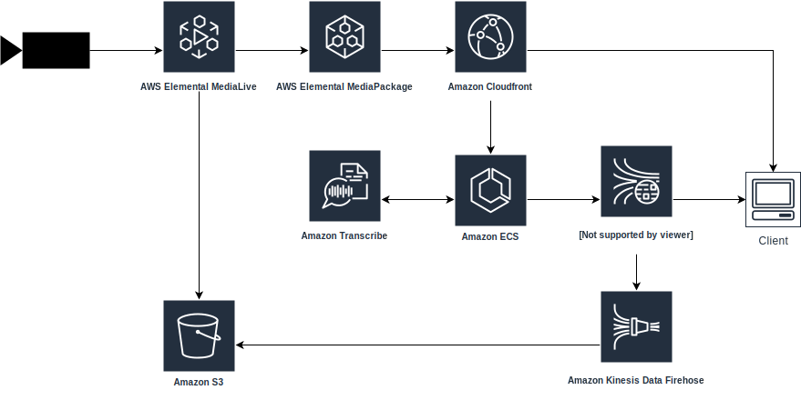

News Media Analysis
- Live video source is delivered (over IP)
- AWS Elemental MediaLive transcodes to audio and video into multiple bitrates
- AWS Elemental MediaPackage packages the bitrates into HLS
- Amazon CloudFront distrbutes content, using the MediaPackage as origin
- Amazon Elastic Container Service (ECS) orchestrates a task to transcode and stream audio into Amazon Transcribe
- Amazon Transcribe transcribes audio and results are sent to Amazon Kinesis Data Streams
- Client plays HLS stream and displays transcription
- Video archive and transciption is stored in Amazon S3 bucket
Sky News UK article on speech analaysis using Amazon Transcribe.